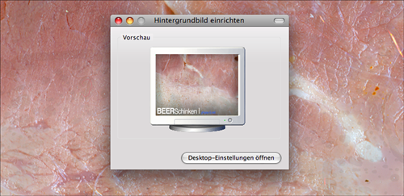
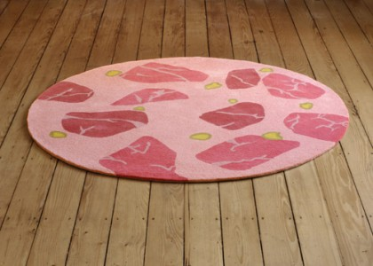
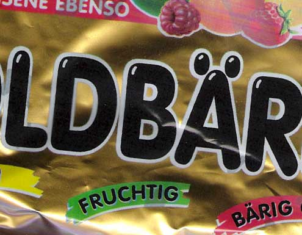

Als Hintergrundbild einrichten…
 Sehr praktisch, dass man im Browser-Kontextmenü, wenn man auf eine Grafik klickt, direkt die Anweisung "Als Hintergrundbild einrichten..." aufrufen kann. So hat man ratzfatz die Wurst auf seinem Desktop. Das Auge arbeitet ja bekanntlich mit. Read more on Als Hintergrundbild einrichten…...
Sooo Süüüüüüüüüüß!
Nachdem wir unsere Wurst-Phase wieder beendet haben, möchte ich heute ein deutliches Gegengewicht setzen. Einer meiner Lieblingsblogs ist nämlich definitiv Cute Overload. Jeden Tag neue niedliche Tierfotos. Um C. A. zu zitieren: "Da wird einem ganz flauschig ums Herz". Read more on Sooo Süüüüüüüüüüß!...
Domian: Der 60 Kilo Hackfleisch-Mann
Wo Pelle grad die Wurst als Lustobjekt "gefordert" hat, fiel mir noch dieser Typ ein. Ihr wusstet ja, der musste noch kommen... (direkt60KiloHack)
Na dann bleiben wir doch beim Thema…
und erfreuen uns an dem hübschen "Wurstteppich". Hier sehen wir das Modell "Bierschinken": 
{kind=link}
Cpt. Kunstdarm
Wo wir schonmal beim Thema "Wurst&Fleisch" sind, möchte ich noch einmal auf den lustigen "Drei Farben Wurst"-Sampler hinweisen:
"Drei Farben Wurst" vereint 15 Kapellen und 17 Titel auf einer einzigen Wurstplatte.Read more on Cpt. Kunstdarm...
Fleischanarchist
Nachdem die Teilnehmer beim Zelten nach Fleisch gebettelt haben (was Jasper früher ürbigens auch gut konnte: "Ich will Flipper auf Toast!"), erinnerte ich mich an den Wurst-Tang-Clan: Zu finden auch hier: http://wursttang.pogo-productions.de/
Read more on Fleischanarchist...Die Bagelkonfusion
Wenn man einen Thunfisch-Bagel ersteht und dieser so penetrant nach Leberwurst riecht, dass man sich Anfeindungen ausgesetzt sieht, könnte es sein, dass die verwirrte Bageltenderin versehentlich Truthahnpaste erwischt hat. Ist aber nur so eine Vermutung... Read more on Die Bagelkonfusion...
Branntweinkunst
Von Generation zu Generation werden die Fertigkeiten der Destillation weitergegeben. Über die Jahrhunderte wurde die Technik besser und ausgereifter. Dieser Tradition verdanken wir ein Premium-Branntweinprodukt, welches im Marktsegment der Spirituosen seinesgleichen sucht: "Klarer"! Read more on Branntweinkunst...
10 Argumente für das Butterbrot
1. Butterbrote sind gesund! 2. Butterbrote schmecken besser als Margarinebrote! 3. Butterbrote sind zusammenklappbar! 4. Butterbrote lassen sich prima auf Maloche mitnehmen! 5. Butterbrote bieten in unserer immer hektischer werdenen Gesellschaft einen bodenständigen Ruhepunkt! Read more on 10 Argumente für das Butterbrot...
Zuckerflash
 Krankheitsbedingt musste ich einige Wochen auf Di- und Polysacharide verzichten (Kartoffeln, Mehl, Süßigkeiten, Brot, Milchprodukte mit Laktose, Gepunshte Trashwurst aus dem Supermarkt). Ich muss sagen, es war ein Genuß nur noch Fleisch und überreife Früchte, sowie selbstgemachten Joghurt zu essen. Ausserdem war erschreckend, dass in fast jeder Wurst Glukosesirup drin ist. Man könnte ja auch Zuckersirup schreiben, aber dann würden die Leute anfangen sich Gedanken zu machen. Read more on Zuckerflash...
- Externe Links im selben Fenster öffnen
- Externe Links in neuem Fenster öffnen